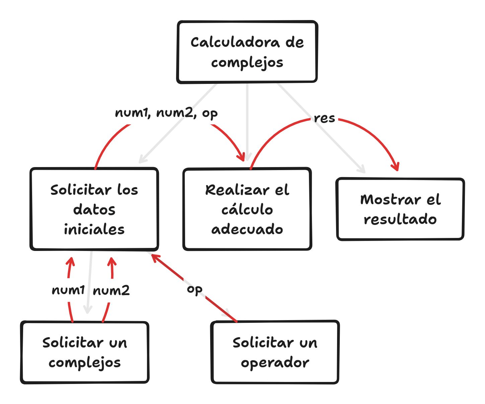

Teoría 401
Funciones I
1 Modularización
1.1 Atacando problemas complejos
- Los ejercicios abordados hasta ahora han sido específicamente diseñados para ser sencillos y fáciles de entender.
- En la práctica, los programas suelen ser (mucho) más complejos.
- Para abordar esta complejidad, debemos proveernos de métodos y estrategias que nos faciliten el trabajo.
- En proyectos grandes, es fundamental:
- Legibilidad.
- Mantenibilidad.
- Reutilización.
- Testabilidad.
1.2 Divide y vencerás
- Una de las estrategias más efectivas para abordar la complejidad es la modularización.
- Consiste en dividir el problema en partes más pequeñas y manejables.
- Cada parte se convierte en un módulo independiente.
- Cada módulo se encarga de una tarea específica.
- Los módulos se comunican o coordinan para resolver el problema global.
1.2.1 Ejemplo: Calculadora de números complejos
- Escribe un Programa Python que implemente una calculadora de números complejos con las siguientes operaciones: suma, resta, multiplicación y división.
- El programa debe:
- Pedir al usuario que introduzca dos números complejos.
- Pedir al usuario que introduzca la operación a realizar.
- Calcular el resultado de la operación.
- Mostrar el resultado con la forma:
{real} + {imag} i.
- Se han impartido todos los conocimientos mínimos para resolver este problema.
- Pero no para abordarlo de forma modular.
1.3 Modularización del problema
- Módulos del programa:
- Entrada: se encarga de pedir al usuario los números y la operación.
- Entrada de números: pide al usuario los números.
- Entrada de operación: pide al usuario la operación.
- Cálculo: se encarga de realizar la operación.
- Salida: se encarga de mostrar el resultado.
- Entrada: se encarga de pedir al usuario los números y la operación.
1.4 Flujo de datos
- Para coordinarse y funcionar adecuada, los módulos deben comunicarse.
- La forma de comunicación entre módulos más común es: compartir información (variables).
- Una información será producida por un módulo,
- para luego ser consumida por otro(s) módulo(s).

2 Funciones
2.1 Funciones
- La forma de modularizar en Python es a través de funciones.
- Las funciones son bloques de código que realizan una tarea específica.
- Se componen de:
- Nombre: identificador único.
- Argumentos: valores de entrada.
- Cuerpo: código que realiza la tarea.
- Valor de retorno [opcional]: resultado de la tarea.
- Se definen usando la palabra reservada
def.
2.1.1 Ejemplo: Definición de la función “saluda”
- Esta función se encargaría de mostrar por pantalla el mensaje
¡Hola, mundo!. - Recuerda la importancia de la indentación.
- Ejecutar el código anterior no mostrará nada por pantalla.
- La hemos definido, pero no la hemos ejecutado.
2.2 Invocación de una función
- Para ejecutar una función, debemos invocarla.
- Una función se invoca escribiendo su nombre seguido de sus argumentos entre paréntesis.
- Si no tiene argumentos, los paréntesis se mantienen vacíos.
- Al igual que con las variables:
- Las funciones deben ser definidas antes de ser invocadas.
- Por ello el orden de un programa será: definir funciones y luego programa principal.
def funcion1():
# Cuerpo de la función 1
def funcion2():
# Cuerpo de la función 2
# Cuerpo del programa principal2.2.1 Ejemplo: Invocación de la función “saluda”
Hola, mundo!
- Al invocar la función
saluda, se mostrará por pantalla el mensaje¡Hola, mundo!. - Recuerda: la función debe ser definida antes de ser invocada.
2.2.2 Ejemplo: Función “castigo”
def castigo():
for i in range(0, 100):
print("No llevaré el móvil encima el día del examen.")
castigo()No llevaré el móvil encima el día del examen.
No llevaré el móvil encima el día del examen.
No llevaré el móvil encima el día del examen.
. . .
No llevaré el móvil encima el día del examen.
No llevaré el móvil encima el día del examen.
. . .
2.3 Orden de ejecución de una función
- Sabemos que es fundamental saber leer/predecir el orden de ejecución de cualquier programa para poder entenderlo.
- Del mismo modo que hemos aprendido a leer bucles y condicionales, debemos aprender a leer funciones.
2.3.1 Ejercicio: Orden de ejecución
Determina la salida por pantalla del siguiente código
def funcion1():
print("Función 1")
def funcion2():
funcion1()
print("Función 2")
print("Global 1")
funcion1()
print("Global 2")
funcion2()
print("Global 3")Solución
Global 1
Función 1
Global 2
Función 1
Función 2
Global 3
Función 1
Global 2
Función 1
Función 2
Global 3
2.4 Scope
- Uno de los principios clave de los módulos es la independencia (desacoplado) del programa principal.
- Un módulo que no depende de otros módulos es más fácil de entender y mantener.
- Si los módulos comparten de forma descontrolada todas las variables entre sí:
- Corren el riesgo de interferir (propenso a errores).
- Se vuelve difícil entender y mantener el código.
- ¿De dónde viene el valor de esta variable?
- Una variable definida dentro de una función se denomina local a esa función:
- Solo es visible y accesible dentro de la función.
- Una variable definida en el programa principal se denomina global:
- Sólo debería visible ni accesible para el programa principal, y no para las funciones.
- Sin embargo, Python permite acceder a las variables globales desde las funciones.
Este código fallará:
Una forma de prevenir utilizar sin querer las variables del programa principal es meter todo el programa principal en una funcion:
- Esta no es una práctica obligatoria (salvo que se indique así) pero es una buena práctica preventiva.
def funcion():
print(variable) # Error: variable no definida
def main():
funcion()
variable = 42 # Variable local
print(variable)
main() # Esta es la ÚNICA instrucción global2.5 Argumentos
- Hemos concluido que las funciones no deben tener acceso descontrolado a todas las variables,
- Cuando necesitemos comunicar información a una función, utilizaremos argumentos.
- Los argumentos son variables que se le pasan a la función para que ésta las use.
- Al definir la función:
- Se definen entre los paréntesis de la función
- Toman nombres únicos dentro de la función.
def funcion(argumento1, argumento2):
# Cuerpo de la función
# argumento1 y argumento2 sólo existen dentro de la función- Al invocar la función:
- Se pasan los valores que se quieren asignar a los argumentos.
- Se evalúan las expresiones
- Se invoca a la función
- Se asigna a cada argumento el valor correspondiente (por orden)
- Se pasan los valores que se quieren asignar a los argumentos.
def funcion(argumento1, argumento2):
# Cuerpo de la función
# argumento1 y argumento2 sólo existen dentro de la función
# argumento1: valor1
# argumento2: valor2
funcion(valor1, valor2)2.5.1 Ejemplo: Saluda con nombre
Escribe una función saluda() que reciba un nombre (str) y le salude Hola, {nombre}!
Hola, Juan!
Hola, María!
Hola, María!
2.5.2 Ejemplo: Potencia I
Escribe una función potencia() que reciba dos números enteros y pinte por pantalla su suma.
def potencia(a, b):
print(f"{a} ^ {b} = {a ** b}")
# A partir de aquí no formaría parte del ejercicio
# pero necesitamos probar la función
a = 3
b = 5
potencia(b, a) # Atención al orden2.5.3 Ejemplo: Potencia II
Escribe un programa que pida al usuario dos números enteros y muestre por pantalla su suma.
def potencia(a, b):
print(f"{a} ^ {b} = {a ** b}")
print("Introduce un número entero:")
a = int(input())
print("Introduce un número entero:")
b = int(input())
potencia(a, b)- Nota: Cuando aprendamos a devolver valores, podremos modularizar aún más este programa.
2.6 Filosofía de diseño modular
- Como se ha manifestado de varias formas:
- La clave de la modularización es la encapsulación.
- Las funciones deben ser independientes y reutilizables.
- Cuando diseñemos una función, debemos tener en cuenta:
- Su objetivo específico: una función = una tarea.
- Desacoplamiento: no condiciones el diseño de una función por el resto del programa.
- Cuando estás programando una función, el resto del programa “no existe”
2.6.1 Ejemplo de funciones acopladas y desacopladas
Desarrolla un programa que pida al usuario la temperatura en grados Celsius del motor de su coche y muestre por pantalla la temperatura en grados Fahrenheit.
Función acoplada